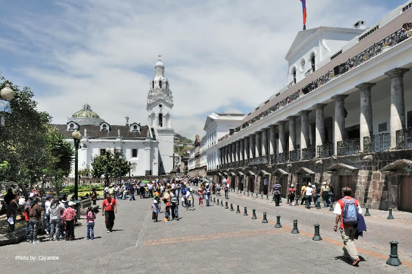
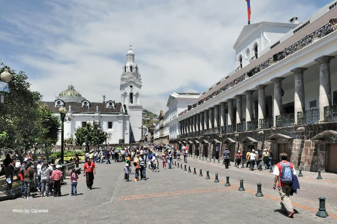
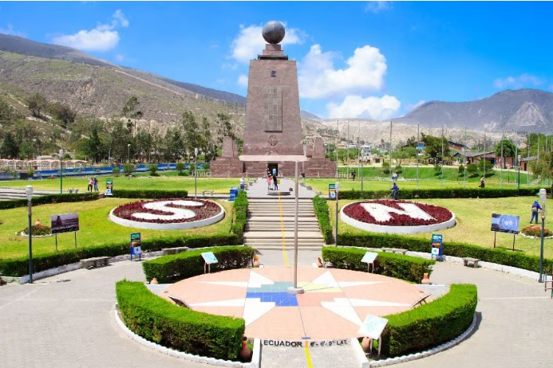
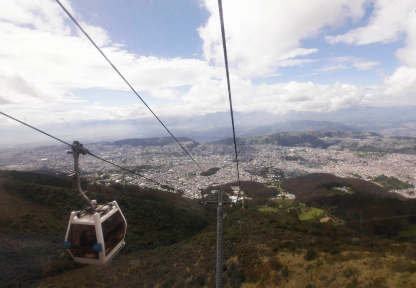

Centro Histórico
Viaja en el tiempo en las ancestrales calles del Centro Histórico y admira la majestuosidad de sus edificaciones patrimoniales.
Bienvenido a la capital eterna de Ecuador, un lugar donde la historia, la cultura y la naturaleza se encuentran.
Viaja en el tiempo en las ancestrales calles del Centro Histórico y admira la majestuosidad de sus edificaciones patrimoniales.
Experimenta la singularidad geográfica de Quito y captura momentos memorables.
Asciende a las alturas y maravíllate con panorámicas inigualables de la ciudad.
